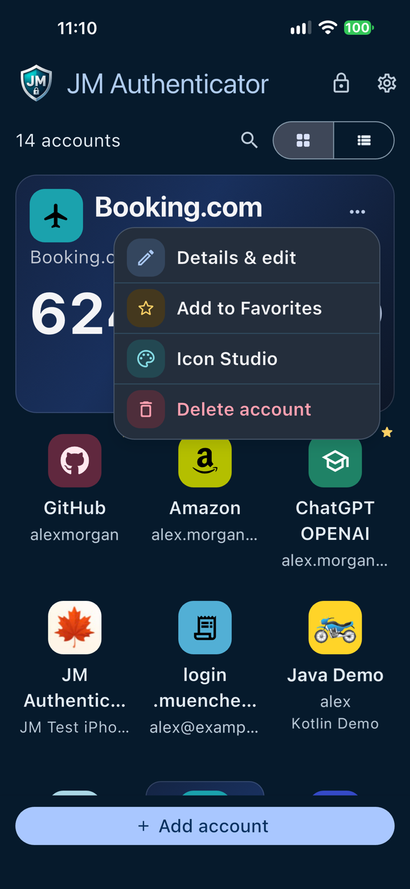
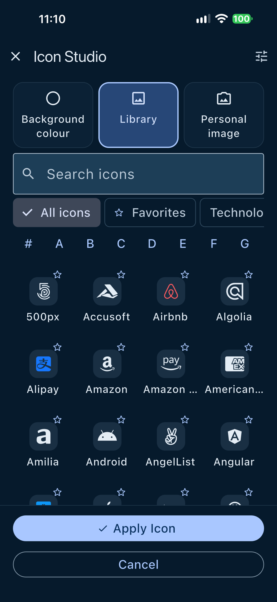

00. Before you start
Thank you for testing JM Authenticator 1.0.0 (Build 1). This guide lists 52 test cases in eight chapters. Each one gives the starting screen, numbered actions and the result you should see after every action. Record your own result for each test — every test starts as NOT TESTED.
This page is unlisted, not private. It is not linked from the website and asks search engines not to index it, but anyone who has the link can open it. Do not type personal information into this page.
Safety rules
- Use demonstration accounts only. Do not test with accounts you use for real sign-ins.
- Never disclose real TOTP secrets, setup keys, setup or export QR codes, or verification codes — not in feedback, screenshots or email.
- Never share backup passwords. Use a throw-away test password of at least 12 characters that you use nowhere else.
- Avoid destructive operations on real data. Only delete, restore or import demo accounts. If this device already has JM Authenticator with real accounts, stop and contact support first.
- Before sending a screenshot, check that it shows only demo data.
Demo data
These keys and QR codes are public examples that protect nothing. Never use them for a real service.
| Service / issuer | Demo Mail |
|---|---|
| Account name | demo@example.com |
| Descriptive label | Demo Account |
| Base32 secret key | JMDEMOMANUALTEST |
| Settings | Defaults: HMAC-SHA1 · 6 digits · 30 seconds |
Demo setup QR codes (all HMAC-SHA1 · 6 digits · 30 seconds):
camera@example.com
TC-03-06 — show it on a second screen and scan it.
Download

photos@example.com
TC-03-07 — touch and hold, then save it to Photos.
Download

files@example.com
TC-03-08 — use Download, then pick it in Files → Downloads.
Download

Your test details
These details are included in the report you generate in chapter 09. All fields are optional.
0 of 52 tests completed
Your results are not sent automatically — not to JM Authenticator and not to Apple TestFlight. They stay in this browser on this device until you generate the report and send it yourself.
If your browser allows it, your progress is kept on this device so you can continue later. Use Clear my results in chapter 09 to remove it.
How to use this guide
- Work through the chapters in order; later tests use accounts created earlier.
- Open a test case, follow the actions and compare each result with the expected result.
- Choose PASS when every expected result appears, FAIL when one does not, BLOCKED when you cannot run the test (for example a missing precondition), and leave NOT TESTED otherwise.
- Where a step is marked Wording not confirmed — report what you see., the exact text comes from iOS or has not been illustrated yet. Write down what you actually see.
01. Installation and first launch
These tests cover installing the beta from TestFlight, the Animated Welcome and the first-run App Lock offer. Run them on a fresh installation.
TC-01-01Install the beta from TestFlightNOT TESTED
| Step | Action | Expected result |
|---|---|---|
| 1 | Open TestFlight and tap JM Authenticator. | The app page opens and shows version 1.0.0 with build 1. Wording not confirmed — report what you see. |
| 2 | Tap Install (or Update). | The download runs; when it finishes, the button changes to Open. |
| 3 | Go to the Home Screen. | The app icon is on the Home Screen with the name JM Auth. |
| 4 | Tap JM Auth. | JM Authenticator opens without an error or crash (continue with TC-01-02). |
Pass when: JM Authenticator installs successfully from TestFlight and can be opened.
Evidence: Screenshot of the TestFlight app page showing the version and build.
TC-01-02First launch and Animated WelcomeNOT TESTED
| Step | Action | Expected result |
|---|---|---|
| 1 | Tap JM Auth. | The Animated Welcome opens on scene 1: Welcome to JM Authenticator, the text Private verification codes, generated offline and ready whenever you need them. and three tiles Offline Codes, Secure Access and Privacy First. At the top are a pause button and Skip; at the bottom eight page dots, ‹ and › arrows and the Next button. |
| 2 | Tap the pause button at the top. | Scenes stop advancing automatically and the button changes to a play button (Play scenes automatically). |
| 3 | Tap Next six times, reading each scene. | The scenes appear in this order: 2 Secure Authentication, 3 Personalize Your Accounts, 4 Encrypted Backups, 5 Import & Export Accounts, 6 More Languages, One App, 7 Your Privacy Comes First. The highlighted page dot moves with each scene. |
| 4 | Tap the ‹ arrow (Previous scene), then Next. | The app goes back to scene 6, then forward to scene 7 again. |
| 5 | Tap Next. | Scene 8 Ready to Get Started? is shown and the main button now reads Get Started. |
| 6 | Tap Get Started. | The welcome closes, the empty Home screen appears, and the Protect your codes dialog opens over it (continue with TC-01-03). |
Pass when: The app starts without crashing; the Animated Welcome and then the App Lock setup dialog appear.
Evidence: Screenshot of scene 8 with Get Started (optional).

TC-01-03First-run App Lock setup and Face ID permissionNOT TESTED
| Step | Action | Expected result |
|---|---|---|
| 1 | Read the dialog. | Title Protect your codes; text Use your fingerprint, face, or device passcode to lock JM Authenticator. You can change this later in Security & app lock.; buttons Skip and Enable app lock. |
| 2 | Tap Enable app lock. | iOS asks whether JM Auth may use Face ID, with the explanation Use Face ID to unlock JM Authenticator when app access lock is enabled. (shown the first time only). |
| 3 | Allow Face ID in the iOS dialog. | Face ID scans your face; the dialog closes and the empty Home screen shows Your accounts, securely in your hands and Add your first account. |
| 4 | Tap the gear icon, then Security & app lock. | App Lock is switched on. The Face ID card reads Face ID is available on this device and will be used to unlock the app. |
Pass when: Face ID permission can be granted and App Lock is on afterwards.
Without Face ID or a passcode the dialog instead reads Device authentication is not available… and shows only Skip. That is expected behavior: record BLOCKED and describe your device setup.
Evidence: Screenshot of the Protect your codes dialog.
02. Security and Face ID
All security options are on Home → Settings (gear) → Security & app lock. App Lock must be on (TC-01-03) for these tests.
TC-02-01Automatic Face ID on relaunchNOT TESTED
| Step | Action | Expected result |
|---|---|---|
| 1 | Swipe up and pause to open the App Switcher, then swipe JM Authenticator up to close it. | JM Authenticator closes. |
| 2 | Tap JM Auth on the Home Screen. | Face ID starts automatically, without tapping anything. Your accounts are not visible yet. The Animated Welcome does not appear again. |
| 3 | Look at the iPhone. | Face ID succeeds and the Home screen with your accounts appears. |
Pass when: Subsequent protected launches automatically request Face ID and unlock on success.
Evidence: None required; a screen recording is helpful if Face ID does not start automatically.
TC-02-02Lock now and UnlockNOT TESTED
| Step | Action | Expected result |
|---|---|---|
| 1 | Tap the padlock icon at the top right, next to the gear. | The accounts disappear and the lock screen shows Your accounts are locked with an Unlock button. |
| 2 | Tap Unlock. | Face ID starts. |
| 3 | Look at the iPhone. | The Home screen with your accounts appears again. |
Evidence: Screenshot of the lock screen.
TC-02-03Cancelled Face ID and passcode fallbackNOT TESTED
| Step | Action | Expected result |
|---|---|---|
| 1 | Tap Unlock and cancel the Face ID prompt (for example, look away until iOS offers to cancel, then cancel). | The accounts stay hidden; the lock screen with Unlock remains. Note any message JM Authenticator shows. |
| 2 | Tap Unlock again and, when Face ID fails or you are offered it, choose to enter the passcode. | iOS shows its passcode screen. Wording not confirmed — report what you see. |
| 3 | Enter your device passcode. | The Home screen with your accounts appears. |
Evidence: Screenshot of any message shown after cancelling.
TC-02-04Security & app lock screen contentsNOT TESTED
| Step | Action | Expected result |
|---|---|---|
| 1 | Under Security, tap Security & app lock (subtitle Biometrics, device passcode, and privacy). | The screen opens with Protect your codes and Use Face ID or your device passcode to keep your authentication codes secure on this device. |
| 2 | Scroll from top to bottom. | In this order: App Lock, the Face ID card, Auto-lock after inactivity, Lock when returning to the app, Hide authentication codes by default and Security information. |
| 3 | Tap Security information. | It expands and explains storage, App Lock limits, device authentication, clipboard privacy and recovery. |
Evidence: Screenshot of the top of the screen.

TC-02-05Lock when returning to the appNOT TESTED
| Step | Action | Expected result |
|---|---|---|
| 1 | Turn on Lock when returning to the app (Require authentication after leaving JM Authenticator.). | The switch is on. |
| 2 | Go to the iOS Home Screen, open another app for about 5 seconds, then return to JM Authenticator. | Face ID is requested before any account is shown. After unlocking, the screen you left is shown again. |
| 3 | Turn off Lock when returning to the app and repeat step 2. | JM Authenticator returns without asking for Face ID. |
| 4 | Restore your preferred settings. | The settings show your choices. |
Evidence: None required.
TC-02-06Auto-lock after inactivityNOT TESTED
| Step | Action | Expected result |
|---|---|---|
| 1 | Open the drop-down under Auto-lock after inactivity. | The options include Immediately, After 30 seconds, After 1 minute (recommended), After 5 minutes, After 10 minutes and Never. Use existing lock behavior may also appear. |
| 2 | Choose After 30 seconds. | The drop-down shows After 30 seconds. |
| 3 | Go back to the Home screen and do not touch the iPhone for 40 seconds (keep the screen on and JM Authenticator open). | JM Authenticator locks itself and shows Your accounts are locked. |
| 4 | Unlock with Face ID and restore your preferred setting. | The Home screen appears; the setting shows your choice. |
Evidence: None required.
TC-02-07Hide authentication codes by defaultNOT TESTED
| Step | Action | Expected result |
|---|---|---|
| 1 | Turn on Hide authentication codes by default. | The description reads When enabled, authentication codes remain hidden until you tap to reveal them. Countdown timers remain visible. |
| 2 | Return to the Home screen (List view). | Every code appears as dots; countdown rings are still visible. |
| 3 | Tap the dots of one demo account. | Only that account’s code is revealed; all other codes stay hidden. |
| 4 | Turn the setting off and return to the Home screen. | Codes are visible without tapping. |
Evidence: None required.
03. Accounts and TOTP codes
Use only the demo accounts listed in Demo data. Run TC-03-02 first; later tests use its Demo Mail account.
TC-03-01Add an account sheetNOT TESTED
| Step | Action | Expected result |
|---|---|---|
| 1 | Tap + Add account at the bottom (on an empty Home screen: Add your first account). | The Add an account sheet opens. |
| 2 | Read the options. | Exactly these four options: Scan QR code (Use your camera), Choose from Photos (Select a QR code screenshot or photo), Choose from Files (Select a saved QR code image), Enter setup key (Enter account details manually). |
| 3 | Close the sheet by swiping it down. | The Home screen is shown; no account was added. |
Pass when: Exactly these four options appear: Scan QR code, Choose from Photos, Choose from Files, Enter setup key.
Evidence: Screenshot of the sheet.

TC-03-02Manual enrollment with the demo setup keyNOT TESTED
| Step | Action | Expected result |
|---|---|---|
| 1 | Tap Enter setup key. | Manual enrollment opens with Service / issuer, Account name, Descriptive label (optional), Change Icon, Base32 secret key, Advanced TOTP settings and Review and add. |
| 2 | Enter Demo Mail, demo@example.com and Demo Account in the first three fields. | The text appears in the fields. |
| 3 | In Base32 secret key, enter JMDEMO and tap Review and add. | The account is not added; the key field shows a validation message, for example The key must contain at least 16 Base32 characters. |
| 4 | Replace the key with JMDEMOMANUALTEST. | The key is hidden as you type (hint A–Z and 2–7; spaces are allowed.). |
| 5 | Leave Advanced TOTP settings unchanged and tap Review and add. | Confirm enrollment shows Demo Mail, demo@example.com, Demo Account and SHA1 · 6 digits · 30 seconds, with the buttons Review and Add account. |
| 6 | Tap Add account. | The Home screen shows the new Demo Mail account with the label Demo Account. |
Pass when: A valid demonstration Base32 secret can be entered and the account saved.
Evidence: Screenshot of Confirm enrollment. The secret key is never shown there.

TC-03-03Grid view and List viewNOT TESTED
| Step | Action | Expected result |
|---|---|---|
| 1 | Tap the grid button of the view selector (next to Reorder codes). | Grid view: accounts in three columns with icons and names, and the number of accounts at the top. Demo Mail appears once, with demo@example.com. |
| 2 | Tap the Demo Mail tile. | The tile is selected and its full identifier and current code are shown. |
| 3 | Touch and hold the Demo Mail tile. | A preview of the full account identity opens. Close it. |
| 4 | Tap the list button of the view selector. | List view: Demo Mail appears once as a card with demo@example.com, the label Demo Account, its code, the copy icon and the countdown ring. The account count is unchanged. |
| 5 | Close JM Authenticator in the App Switcher and open it again. | The app opens in the view you used last. |
Pass when: The saved demonstration account appears in Grid view with its details and in List view without data loss or duplication.
Evidence: Screenshots of both views.


TC-03-04TOTP generation, expiry and refreshNOT TESTED
| Step | Action | Expected result |
|---|---|---|
| 1 | Tap the dots of Demo Mail. | A six-digit code appears; the countdown ring shows the remaining seconds. |
| 2 | Optional: compare the code with the other authenticator app. | Both apps show the same six digits. |
| 3 | Wait until the countdown reaches zero. | The revealed code is hidden again automatically. |
| 4 | Tap the dots again. | A different six-digit code appears with a new countdown starting from about 30 seconds. |
Pass when: A valid six-digit TOTP code is generated; a revealed code is hidden when its 30-second period expires; a new valid code becomes available afterwards.
Evidence: None required. If codes differ from another authenticator, note both apps and check that the iPhone’s date and time are set automatically.
TC-03-05Copy a code, notification and clipboard clearingNOT TESTED
| Step | Action | Expected result |
|---|---|---|
| 1 | Tap the copy icon of Demo Mail. | A floating confirmation appears showing the account name, Code copied successfully! and Clipboard clears within 30 seconds or when the code expires. |
| 2 | Within 10 seconds, open Notes and paste into a new note. | The six-digit code currently shown for Demo Mail is pasted. |
| 3 | Wait at least 30 seconds, then paste again into the note. | Nothing is pasted (the clipboard was cleared). |
| 4 | Delete the test note. | The note is gone. |
Pass when: The current code is placed on the clipboard; the notification shows the account name and the clipboard warning; the code is cleared automatically (the internal test confirmed clearing after 30 seconds).
If the code expires sooner than 30 seconds after copying, the clipboard may be cleared earlier — that is expected.
Evidence: Screenshot of the confirmation.

TC-03-06Scan QR code with the cameraNOT TESTED
| Step | Action | Expected result |
|---|---|---|
| 1 | Tap Scan QR code. | The first time, iOS asks for camera access with JM Authenticator uses the camera to scan account enrollment QR codes and take personal account icon photos on this device. |
| 2 | Allow camera access. | Scan enrollment QR code opens with the camera view and Point your camera at the TOTP setup QR code provided by your service. Scanning stays on this device. |
| 3 | Point the camera at the Demo Camera QR code. | Review QR enrollment opens with Demo Camera and camera@example.com. |
| 4 | Tap Review and add. | Confirm enrollment shows Demo Camera, camera@example.com and SHA1 · 6 digits · 30 seconds. |
| 5 | Tap Add account. | Demo Camera appears on the Home screen with a six-digit code. |
If you deny camera access, JM Authenticator should show Camera unavailable. Allow camera access in device settings, or use manual enrollment.
Evidence: Screenshot of Review QR enrollment.
TC-03-07Choose from PhotosNOT TESTED
| Step | Action | Expected result |
|---|---|---|
| 1 | Tap Choose from Photos. | The iOS photo picker opens. |
| 2 | Select the Demo Photos QR image. | Review QR enrollment opens with Demo Photos and photos@example.com. |
| 3 | Tap Review and add, then Add account. | Demo Photos appears on the Home screen. |
| 4 | Delete the QR image from Photos and from Recently Deleted. | The image is gone. |
An image without a QR code should show No QR code was found in this image. Choose an image that clearly shows the whole QR code.
Evidence: Screenshot of Review QR enrollment.
TC-03-08Choose from FilesNOT TESTED
| Step | Action | Expected result |
|---|---|---|
| 1 | Tap Choose from Files. | The iOS Files browser opens. |
| 2 | Open Downloads and select demo-qr-files.png. | Review QR enrollment opens with Demo Files and files@example.com. |
| 3 | Tap Review and add, then Add account. | Demo Files appears on the Home screen. |
| 4 | Delete the downloaded file in Files. | The file is gone. |
Evidence: Screenshot of Review QR enrollment.
TC-03-09Duplicate account protectionNOT TESTED
| Step | Action | Expected result |
|---|---|---|
| 1 | Tap Scan QR code and scan the Demo Camera QR code again. | Review QR enrollment opens. |
| 2 | Tap Review and add (and Add account if offered). | The account is not added a second time; a message explains that it already exists, for example This account is already enrolled. Edit its descriptive label instead. Wording not confirmed — report what you see. |
| 3 | Return to the Home screen. | Demo Camera appears only once. |
Evidence: Screenshot of the message.
TC-03-10Search codesNOT TESTED
| Step | Action | Expected result |
|---|---|---|
| 1 | Tap Search codes (hint Service, account, or installation). | The keyboard opens. |
| 2 | Type camera. | Only Demo Camera is shown, with its code, copy icon and countdown. Reorder codes is unavailable. |
| 3 | Replace the text with zzz. | No accounts match your search. |
| 4 | Delete the search text. | All accounts are shown again. |
Evidence: Screenshot of step 2.

TC-03-11Add to and remove from FavoritesNOT TESTED
| Step | Action | Expected result |
|---|---|---|
| 1 | Tap the ••• button (Account actions) of the last demo account. | A menu opens with Details & edit, Add to Favorites, Icon Studio and Delete account. |
| 2 | Tap Add to Favorites. | The account shows a star and moves to the top of the list. |
| 3 | Open its ••• menu again. | The menu now shows Remove from Favorites. |
| 4 | Tap Remove from Favorites. | The star disappears and the account moves back below any remaining favorites. |
Evidence: Screenshot of a starred account.


TC-03-12Reorder codesNOT TESTED
| Step | Action | Expected result |
|---|---|---|
| 1 | Tap Reorder codes. | The button changes to Done and the accounts can be dragged. |
| 2 | Drag Demo Mail to a different position. | The list shows the new order. |
| 3 | Tap Done. | The button changes back to Reorder codes; the new order is kept. |
| 4 | Close JM Authenticator in the App Switcher and open it again. | The new order is still shown. |
| 5 | Switch to Grid view and tap Reorder codes. | The accounts are shown as a list with Reorder in the list, then tap Done to return to the grid. |
| 6 | Tap Done. | Grid view is shown again with the new order. |
Favorites always stay above the other accounts; each group is ordered separately.
Evidence: None required.
TC-03-13Edit account detailsNOT TESTED
| Step | Action | Expected result |
|---|---|---|
| 1 | Open the ••• menu of Demo Mail and tap Details & edit. | Edit account opens with the account details and Your secret stays hidden. To change a secret, enroll a new account. The secret key is not shown. |
| 2 | Change Descriptive label to Demo Account Edited. | The field shows the new text. |
| 3 | Tap Save changes. | The Home screen shows Demo Mail with the label Demo Account Edited; its code continues unchanged. |
Edit account also offers Show setup QR code. That QR code contains the account secret: open it only for demo accounts and never photograph or share it.
Evidence: Screenshot of Edit account (it does not show the secret).
TC-03-14Delete an accountNOT TESTED
| Step | Action | Expected result |
|---|---|---|
| 1 | Open the ••• menu of Demo Files and tap Delete account. | The dialog Delete account? reads Remove Demo Files (files@example.com) from JM Authenticator? and This does not disable two-factor authentication at the service. Make sure you have another way to sign in., with Cancel and Delete. |
| 2 | Tap Cancel. | The dialog closes; Demo Files is still listed. |
| 3 | Repeat step 1 and tap Delete. | Demo Files disappears; the account count drops by one; other accounts are unchanged. |
Evidence: Screenshot of the dialog.
04. Icon Studio
Icon Studio opens from an account’s ••• menu. It has three tabs: Background colour, Library and Personal image.
TC-04-01Choose and apply a Library iconNOT TESTED
| Step | Action | Expected result |
|---|---|---|
| 1 | Open the ••• menu of Demo Mail and tap Icon Studio. | Icon Studio opens with the tabs Background colour, Library and Personal image, and the buttons Apply Icon and Cancel. |
| 2 | Tap Library. | Search icons, the chips All icons, Favorites and categories (for example Technology & Cloud), a letter row #, A, B… and the icon grid are shown. |
| 3 | Tap a letter, for example G. | The grid jumps to icons whose names start with that letter. |
| 4 | Type git in Search icons. | Matching icons such as GitHub are shown. |
| 5 | Tap an icon. | The icon is marked as selected and the preview shows it. |
| 6 | Tap Apply Icon. | Icon Studio closes and Demo Mail shows the new icon on the Home screen. |
Pass when: Library navigation works; selecting and applying an icon updates the account icon.
Known and accepted for this build: the currently active letter is not strongly highlighted. This is a planned later improvement, not a failure of this test.
Evidence: Screenshot of the Home screen with the new icon.


TC-04-02Change the icon background colourNOT TESTED
| Step | Action | Expected result |
|---|---|---|
| 1 | Tap Background colour. | Colour choices and Custom colour are shown; the previews show the current icon. |
| 2 | Choose a colour different from the current one. | The previews show the icon on the new colour. |
| 3 | Optional: open Custom colour and move Hue, Saturation and Brightness. | The previews change as you move each slider. |
| 4 | Tap Apply Icon. | Demo Mail shows the new background colour on the Home screen. |
| 5 | Close and reopen JM Authenticator. | The colour is still applied. |
Pass when: The selected background colour is applied to the account icon and remains visible.
Evidence: Screenshot of the Home screen.
TC-04-03Use a personal image as iconNOT TESTED
| Step | Action | Expected result |
|---|---|---|
| 1 | Tap Personal image. | Choose an image from: with Photo Library, Take Photo and Choose File. |
| 2 | Tap Photo Library and choose the neutral image. | Crop image opens with Pinch to zoom and drag to position the image., Rotate, Reset and Done. |
| 3 | Adjust the crop and tap Done. | Icon Studio shows the image in the previews, with Edit image colours & position and Choose another image. Wording not confirmed — report what you see. |
| 4 | Tap Edit image colours & position, move the image, then tap Apply changes. | The previews show the adjusted image. |
| 5 | Tap Apply Icon. | The demo account shows the image as its icon on the Home screen. |
Evidence: Screenshot of the Home screen.
TC-04-04Restore the default iconNOT TESTED
| Step | Action | Expected result |
|---|---|---|
| 1 | Find and tap Restore default icon (Use the automatically assigned icon). | The previews show the automatic icon. Wording not confirmed — report what you see. |
| 2 | Tap Apply Icon. | The account shows its automatic icon on the Home screen. |
Evidence: None required.
05. Encrypted backups
Backups are password-protected .jmbackup files. Use a throw-away test password of at least 12 characters that you use nowhere else, and never share it.
Backup terms used in this build.
- Backup & Restore in Settings is a section heading, not a button. The entry you tap is Encrypted backups.
- Backup storage has three options: External backup (Recommended), Internal backup and Both.
- With Both, JM Authenticator records two linked history entries: one Internal and one External, each marked Both copies recorded in history. There is no third, combined row.
- The Internal · External · Both legend under Backup history is information only. Tapping it does not filter the list in this build.
TC-05-01Open Encrypted backupsNOT TESTED
| Step | Action | Expected result |
|---|---|---|
| 1 | Find Backup & Restore and tap the heading itself. | Nothing happens: it is a section heading. Below it are Encrypted backups (Create, manage, and restore backups.) and Import & Export Accounts. |
| 2 | Tap Encrypted backups. | The screen shows Keep a secure backup of your accounts, encrypted and protected by your password., the cards Back Up All Accounts and Restore from backup file, Backup history (N entries) with the legend Internal · External · Both, and the Backup safety notice. With no backups yet: No backups recorded yet. Backups created before tracking began or saved elsewhere may still exist. |
| 3 | Tap Internal, External and Both in the legend. | Nothing changes; the legend only explains the icons. |
Evidence: Screenshot of the screen.


TC-05-02Backup form validationNOT TESTED
| Step | Action | Expected result |
|---|---|---|
| 1 | Tap Back Up All Accounts. | The backup form opens with Choose your backup type, Backup storage, Backup filename (The .jmbackup extension is added automatically.), Protect your backup with a password, Backup password (12–1024 characters), Confirm backup password and Create encrypted backup. |
| 2 | Enter short in both password fields and tap Create encrypted backup. | No backup is created; Password must contain at least 12 characters. |
| 3 | Enter two different passwords of 12+ characters and tap Create encrypted backup. | Passwords do not match. |
| 4 | Clear Backup filename and tap Create encrypted backup. | Enter a backup filename. |
| 5 | Leave the form with the back arrow. | No new entry appears in Backup history. |
Evidence: None required.
TC-05-03Create an External backupNOT TESTED
| Step | Action | Expected result |
|---|---|---|
| 1 | Open Backup storage and choose External backup (Recommended). | Its description reads Save to a location you choose, including this iPhone or iCloud Drive. Easy to transfer and restore on another device. |
| 2 | Enter the filename JM-TestFlight-External and your test password twice, then tap Create encrypted backup. | Save your external backup appears with Select a safe folder, then tap Save. and Continue. |
| 3 | Tap Continue. | The iOS Files save window opens with the filename under Save as. |
| 4 | Choose a folder On My iPhone and tap Save. | Backup created successfully shows the filename, Storage, Accounts and OK. |
| 5 | Tap OK. | Encrypted backups is shown; Backup history has one more entry, at the top: the filename, date and time, and External · Accounts included: N. |
Evidence: Screenshot of Backup created successfully.


TC-05-04Create a backup with storage BothNOT TESTED
| Step | Action | Expected result |
|---|---|---|
| 1 | Open Backup storage and choose Both. | Its description reads Save an encrypted backup inside JM Authenticator and another copy to a location you choose. |
| 2 | Enter the filename JM-TestFlight-Both and your test password twice, then tap Create encrypted backup. | Save your external backup appears with Continue. |
| 3 | Tap Continue, choose a folder and tap Save. | Backup created successfully shows Internal filename, External filename, Storage: Both and Accounts. |
| 4 | Tap OK and look at Backup history. | The entry count has increased by two. One new row shows Internal · Accounts included: N, the other External · Accounts included: N. Both rows show a link icon and Both copies recorded in history. There is no separate combined row. |
Evidence: Screenshot of the two linked history rows.
TC-05-05Create an Internal backupNOT TESTED
| Step | Action | Expected result |
|---|---|---|
| 1 | Choose Internal backup under Backup storage. | Its description reads Save privately inside JM Authenticator on this iPhone. Intended for local recovery; may be lost if the app is deleted. |
| 2 | Enter the filename JM-TestFlight-Internal and your test password twice, then tap Create encrypted backup. | No Files window opens. Backup created successfully shows the filename, Storage and Accounts. |
| 3 | Tap OK. | Backup history has one more entry: Internal · Accounts included: N, without a link icon. |
Evidence: Screenshot of the new row.
TC-05-06Backup history count and selectionNOT TESTED
| Step | Action | Expected result |
|---|---|---|
| 1 | Read the history heading. | Backup history (3 entries): the two linked rows from Both plus the External backup. |
| 2 | Tap the heading to collapse it, then again to expand it. | The list closes and opens; the newest backup is at the top. |
| 3 | Tap an older row. | The row is highlighted with a check mark; Restore selected backup is available. |
| 4 | Read the Backup safety notice. | Keep backup files and passwords safe. A history entry does not guarantee its file still exists. A forgotten backup password cannot be recovered. |
If you ran the backup tests in another order or more often, the count differs. Write the number shown and the backups you created in your comments.
Evidence: Screenshot of the expanded history.

06. Backup restoration
Restoring only adds accounts. Existing accounts are kept and exact duplicates are skipped. You need the backup file and its password.
TC-06-01Wrong password and nothing new to restoreNOT TESTED
| Step | Action | Expected result |
|---|---|---|
| 1 | Tap Restore from backup file. | The iOS Files window opens. |
| 2 | Select JM-TestFlight-External.jmbackup. | Restore encrypted backup shows the file name, Backup password, Continue and Select another backup file. |
| 3 | Enter a wrong password and tap Continue. | A message says Incorrect password or damaged backup and that no accounts were imported. |
| 4 | Enter the correct password and tap Continue. | Choose accounts to restore opens. Backup content shows Accounts in backup N, Already in JM Authenticator N and Available to restore 0, with Nothing new to restore. Restore selected accounts (0) is unavailable. |
| 5 | Tap Cancel. | You return without any change; the Home screen lists the same accounts as before. |
Evidence: Screenshot of the Backup content summary.


TC-06-02Restore a deleted demo accountNOT TESTED
| Step | Action | Expected result |
|---|---|---|
| 1 | Delete Demo Camera (TC-03-14 steps). | Demo Camera is no longer listed. |
| 2 | Open Settings → Encrypted backups → Restore from backup file, select the backup and enter the password, then tap Continue. | Choose accounts to restore shows Available to restore 1; Demo Camera is listed under Available to restore. |
| 3 | Select Demo Camera. | The bottom bar shows 1 account selected and the button Restore selected accounts (1). |
| 4 | Tap Restore selected accounts (1). | Restoration completed with New accounts restored: 1. |
| 5 | Tap Done. | Demo Camera is back on the Home screen; all other accounts are unchanged. Optional: its code matches the other authenticator. |
Evidence: Screenshot of Restoration completed.
TC-06-03Restore selected backup from historyNOT TESTED
| Step | Action | Expected result |
|---|---|---|
| 1 | Expand Backup history and tap the Internal row of JM-TestFlight-Both. | The row is highlighted with a check mark. |
| 2 | Tap Restore selected backup. | Restore encrypted backup shows that backup’s file name and Backup password. |
| 3 | Enter the password and tap Continue. | Choose accounts to restore opens with the Backup content summary for that backup. |
| 4 | Tap Cancel. | No accounts change. |
If the file behind a history entry was moved or deleted, JM Authenticator says so and asks you to locate it with Select backup file. Report the exact message.
Evidence: Screenshot of step 3.
07. Import and export
Open Settings → Import & Export Accounts. Imports are processed on your device; only accounts you select are added. Use demo accounts only in the other app as well — export QR codes and files contain secrets.
TC-07-01Import & Export Accounts screenNOT TESTED
| Step | Action | Expected result |
|---|---|---|
| 1 | Under Backup & Restore, tap Import & Export Accounts. | The screen shows Import into JM with Google Authenticator (Import accounts from QR codes or screenshots.), 2FAS Authenticator and Ente Auth, and Export with Export Accounts (Choose which accounts to export as QR codes or a password-protected file.). |
Evidence: Screenshot of the screen.

TC-07-02Import from Google AuthenticatorNOT TESTED
| Step | Action | Expected result |
|---|---|---|
| 1 | Tap Google Authenticator. | Import from Google Authenticator shows Scan a QR code, Choose images, Start over and No QR parts collected. |
| 2 | Tap Scan a QR code and scan the export QR code on the second device. | Progress such as 1 QR part collected out of 1. |
| 3 | Continue when all parts are collected. | Choose accounts to import lists the demo accounts. Wording not confirmed — report what you see. |
| 4 | Select the accounts and confirm the import. | The import completes and reports the number of accounts imported; existing accounts are unchanged. |
| 5 | Return to the Home screen. | The imported demo accounts are listed once each. |
Evidence: Screenshot of the import result. Never capture the export QR code.
TC-07-03Import from 2FASNOT TESTED
| Step | Action | Expected result |
|---|---|---|
| 1 | Tap 2FAS Authenticator. | Import from 2FAS opens. |
| 2 | Choose the .2fas file in the Files window. | If the backup is encrypted, the 2FAS backup password field is shown. |
| 3 | Enter the password if required and continue. | Choose accounts to import shows the Import content summary. |
| 4 | Select the eligible accounts and tap Import N accounts. | The import completes; existing JM accounts are unchanged. Wording not confirmed — report what you see. |
| 5 | Return to the Home screen. | The imported demo accounts are listed once each. |
Evidence: Screenshot of the Import content summary.

TC-07-04Import from Ente AuthNOT TESTED
| Step | Action | Expected result |
|---|---|---|
| 1 | Tap Ente Auth. | Import from Ente Auth shows Choose Ente export and Formats and privacy. |
| 2 | Tap Formats and privacy. | It lists Encrypted (Password-protected export (recommended)), Plain text (Unencrypted export) and Plain HTML (Not supported). |
| 3 | Tap Choose Ente export and select the file (enter the Ente export password if asked). | Choose accounts to import shows the Import content summary. |
| 4 | Select eligible accounts and tap Import N accounts. | The import completes; Your existing JM accounts are unchanged. Wording not confirmed — report what you see. |
| 5 | Delete the export file from Files. | The file is gone. |
Evidence: Screenshot of the Import content summary.
TC-07-05Export as QR CodesNOT TESTED
| Step | Action | Expected result |
|---|---|---|
| 1 | Tap Export Accounts. | Export Accounts shows Choose which accounts to export, the account list with selection, N of M selected, Select all / Clear All and Export method. |
| 2 | Select one demo account and tap Export as QR Codes. | Authentication is requested (Authenticate to show QR codes). |
| 3 | Authenticate with Face ID. | Export QR Codes shows QR code 1 of 1, the warning Anyone who scans these QR codes can access the exported accounts. Keep them private. and the instructions. |
| 4 | Go to the iOS Home Screen and return. | The QR code is no longer shown: QR codes were cleared for your privacy. Authenticate again to continue. |
| 5 | Close the screen. | Your accounts are unchanged. |
Evidence: No screenshot of the QR code. A screenshot of the message in step 4 is welcome.
TC-07-06Export to Encrypted FileNOT TESTED
| Step | Action | Expected result |
|---|---|---|
| 1 | Select two demo accounts and tap Export to Encrypted File. | A password-protected export form opens for the selected accounts. Wording not confirmed — report what you see. |
| 2 | Enter a test password twice and save the file to On My iPhone in Files. | JM Authenticator confirms that the export was saved. |
| 3 | Restore it via Encrypted backups → Restore from backup file (TC-06-01 steps 1–4). | Choose accounts to restore shows Accounts in backup 2. |
The app says: Encrypted account exports can also be restored later using Restore from Backup File. Describe each screen you see in your comments, as this flow has no screenshots yet.
Evidence: Screenshot of the confirmation.
08. Settings, appearance and languages
These tests cover the remaining Settings entries, the appearance options, the seven in-app languages and basic accessibility.
TC-08-01Settings overviewNOT TESTED
| Step | Action | Expected result |
|---|---|---|
| 1 | Tap the gear icon. | Settings shows, from top to bottom: Language, Appearance; Security → Security & app lock; Backup & Restore → Encrypted backups, Import & Export Accounts; About → Animated Welcome, Replay welcome, Privacy Policy, About JM Authenticator. |
Evidence: Screenshot of Settings.

TC-08-02Display modeNOT TESTED
| Step | Action | Expected result |
|---|---|---|
| 1 | Tap Appearance. | App appearance opens with Display mode: System, Light, Midnight Blue, Dark, and Accent theme. |
| 2 | Choose Light, then visit Home, Settings and Encrypted backups. | All three screens use the light appearance; text and buttons are readable. |
| 3 | Repeat with Midnight Blue and Dark. | All screens use the chosen appearance; text and buttons are readable. |
| 4 | Choose System, then switch iOS between Light and Dark in Control Centre. | JM Authenticator follows the iOS setting. |
Evidence: One screenshot per mode of the Home screen.
TC-08-03Accent themeNOT TESTED
| Step | Action | Expected result |
|---|---|---|
| 1 | Under Accent theme, choose each option: JM Teal (default), Ocean Blue, Indigo, Forest Green. | The chosen option is checked and the app’s accent colour changes accordingly. |
| 2 | Go back to Settings. | Appearance summarises the display mode and accent, for example Light · Indigo. |
| 3 | Restore JM Teal (default). | The default accent is shown. |
Evidence: None required.
TC-08-04In-app languageNOT TESTED
| Step | Action | Expected result |
|---|---|---|
| 1 | Tap Language. | Select language lists English, Deutsch, Español, Tiếng Việt, Français, 简体中文 and 繁體中文. |
| 2 | Choose Deutsch. | The app’s text changes to German, including Settings and the Home screen. |
| 3 | Close and reopen JM Authenticator. | The app is still in German. |
| 4 | Open the language setting again and choose English. | The app’s text is English again. |
Evidence: Screenshots of any untranslated or cut-off text.
TC-08-05Larger textNOT TESTED
| Step | Action | Expected result |
|---|---|---|
| 1 | Turn on Larger Accessibility Sizes and set a large size. | The iOS setting is applied. |
| 2 | Open JM Authenticator and view Home, Settings and Encrypted backups. | Text is larger; no essential label or button is cut off or overlapping. On Encrypted backups the two action cards are shown one below the other. |
| 3 | Restore your usual text size. | Text returns to normal. |
Evidence: Screenshots of any cut-off text.
TC-08-06VoiceOver basicsNOT TESTED
| Step | Action | Expected result |
|---|---|---|
| 1 | Turn on VoiceOver and swipe through a demo account card. | VoiceOver reads the service and account name, Authentication code hidden, Copy code and Account actions. |
| 2 | Double-tap Copy code. | The code is copied and the confirmation is announced or shown. |
| 3 | Turn off VoiceOver. | Normal operation resumes. |
Evidence: Describe anything unlabelled or unclear.
TC-08-07Animated Welcome and Replay welcomeNOT TESTED
| Step | Action | Expected result |
|---|---|---|
| 1 | Read the Animated Welcome row. | It reads Show once after installing or updating the app. with a switch. |
| 2 | Turn the switch off and on again. | The switch changes each time without an error message. |
| 3 | Tap Replay welcome. | The Animated Welcome starts at scene 1. |
| 4 | Tap Skip. | You return to Settings. |
Evidence: None required.
TC-08-08Privacy Policy linkNOT TESTED
| Step | Action | Expected result |
|---|---|---|
| 1 | Tap Privacy Policy. | The browser opens https://jegprofil.info/jm-authenticator/privacy/ with the JM Authenticator Privacy Policy. |
| 2 | Return to JM Authenticator. | Settings is shown (after Face ID if your lock settings require it). |
Evidence: None required.
TC-08-09About JM AuthenticatorNOT TESTED
| Step | Action | Expected result |
|---|---|---|
| 1 | Read the About JM Authenticator row. | The subtitle reads Version 1.0.0. (The build number is shown in TestFlight, not in the app.) |
| 2 | Tap About JM Authenticator. | The About screen shows Developed by Jess Macc, Security and Privacy, Your Accounts. Your Control., Important, Open-source licences and the copyright notice. |
There is no Support link inside the app in this build. For help, use support@jegprofil.info or the Support page.
Evidence: None required.
09. Feedback and reporting
What to include
- Test ID (for example
TC-05-04) - Device model and iOS version
- App version and build — 1.0.0 (1)
- Result: PASS, FAIL, BLOCKED or NOT TESTED
- The actual result, when it differs from the expected result
- Steps to reproduce
- A screenshot when useful — demo data only
Send feedback directly through Apple TestFlight
Important: You can also report problems directly to Apple TestFlight.
- Open the TestFlight app on your iPhone.
- Select JM Authenticator.
- Tap Send Beta Feedback.
- Describe the problem and optionally attach a screenshot.
- Tap Submit.
Your feedback will be available to the JM Authenticator development team through Apple's App Store Connect.
Please use this method especially for bugs, crashes, unexpected behaviour or problems that are easier to explain with a screenshot.
Privacy reminder: Before submitting screenshots, make sure they contain only demonstration accounts and no sensitive information.
You can also email support@jegprofil.info. Never send secret keys, codes, backup files, backup passwords or QR codes.
Your test report
0 of 52 tests completed
Nothing on this page is sent automatically — not to JM Authenticator and not to Apple TestFlight. Your report only reaches us when you send it yourself.
- Generate report collects your tester details, every test you marked and your comments.
- Copy report copies it so you can paste it into TestFlight feedback or a message.
- Email report opens a new draft to support@jegprofil.info in your device’s email app. Check the draft and tap Send yourself.
Need help?
Visit JM Authenticator Support, read the User Guide or the Privacy Policy, or email support@jegprofil.info.